基督教臺灣信義會
靈糧堂 週報

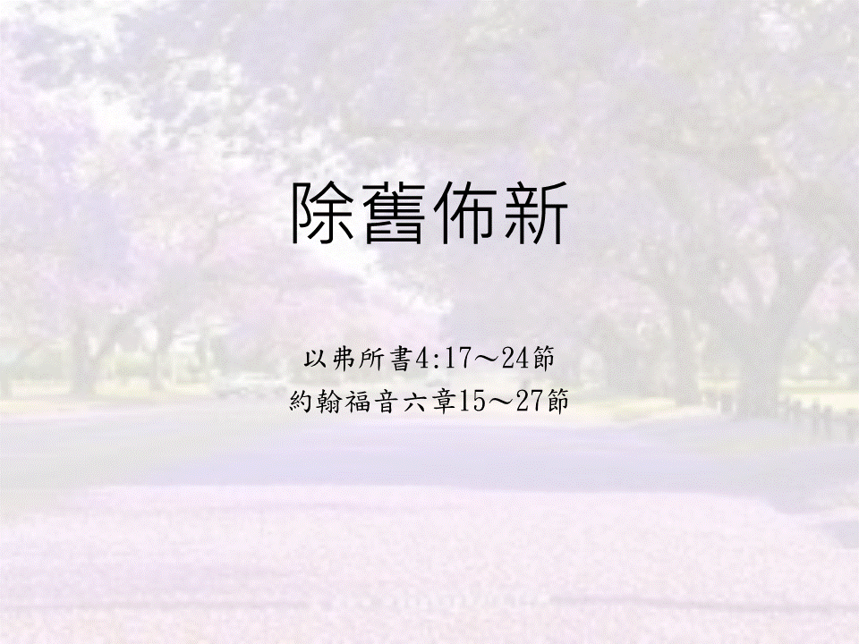
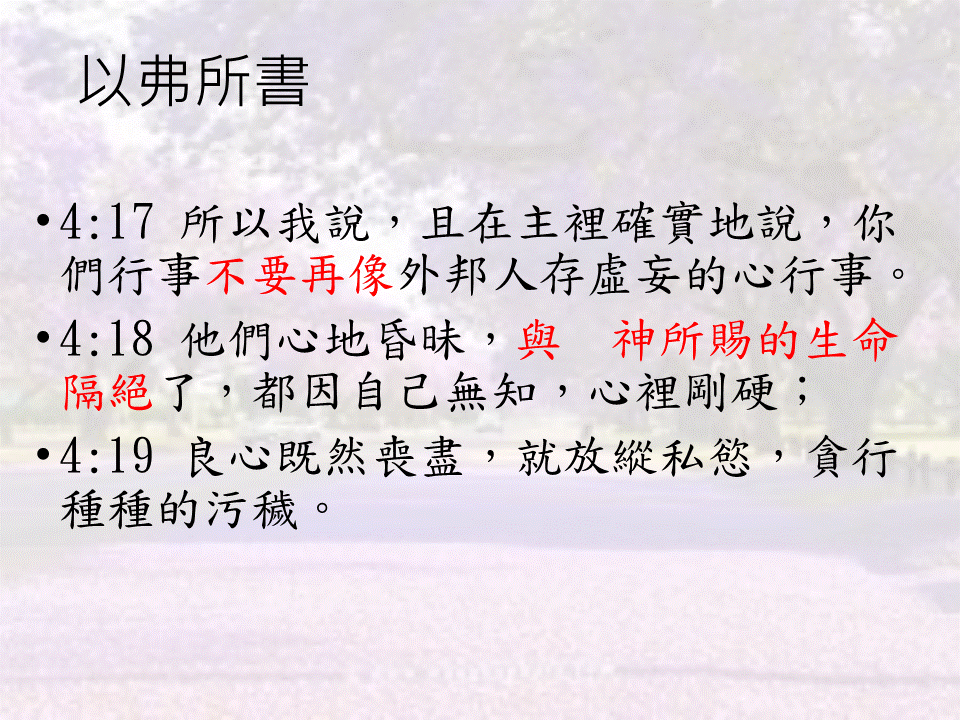
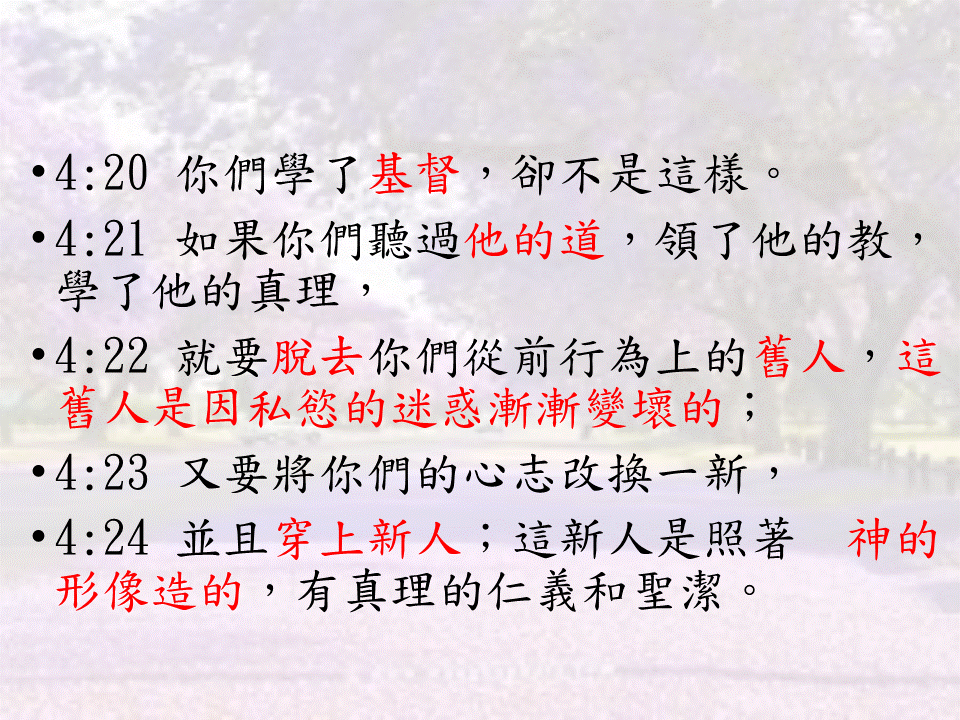
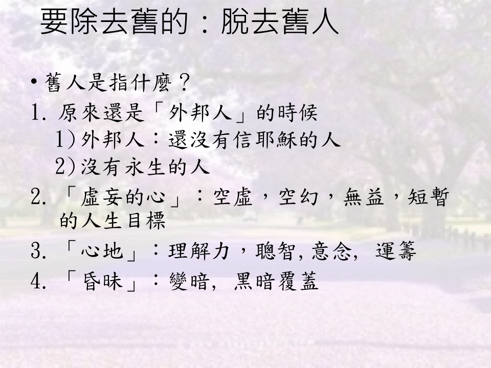
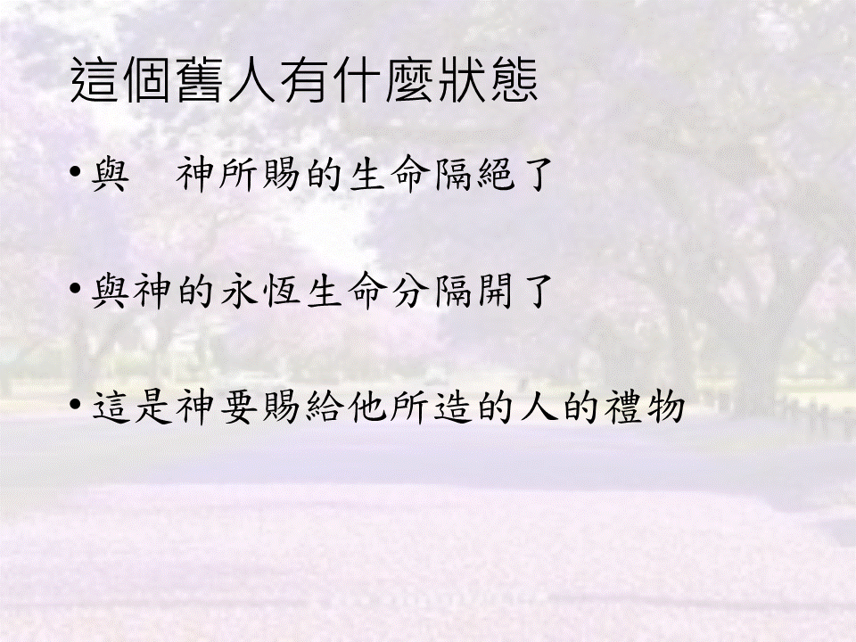
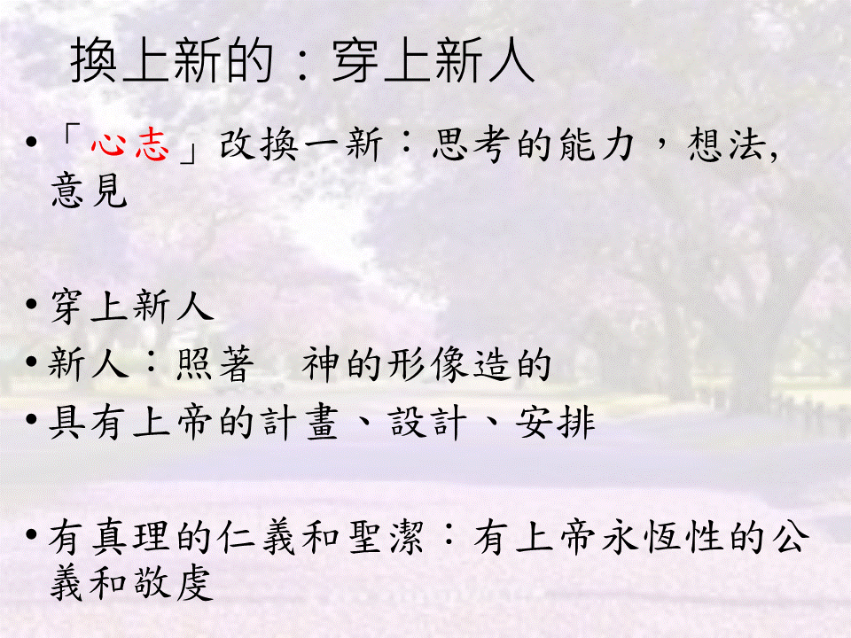
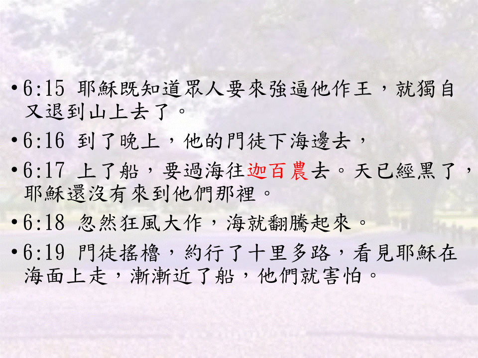
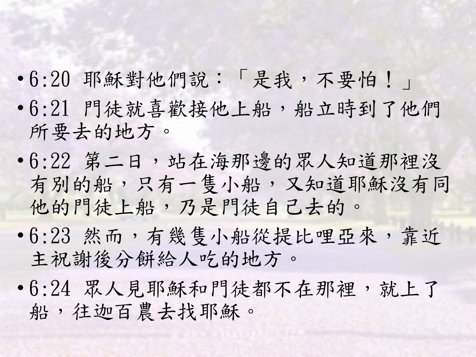
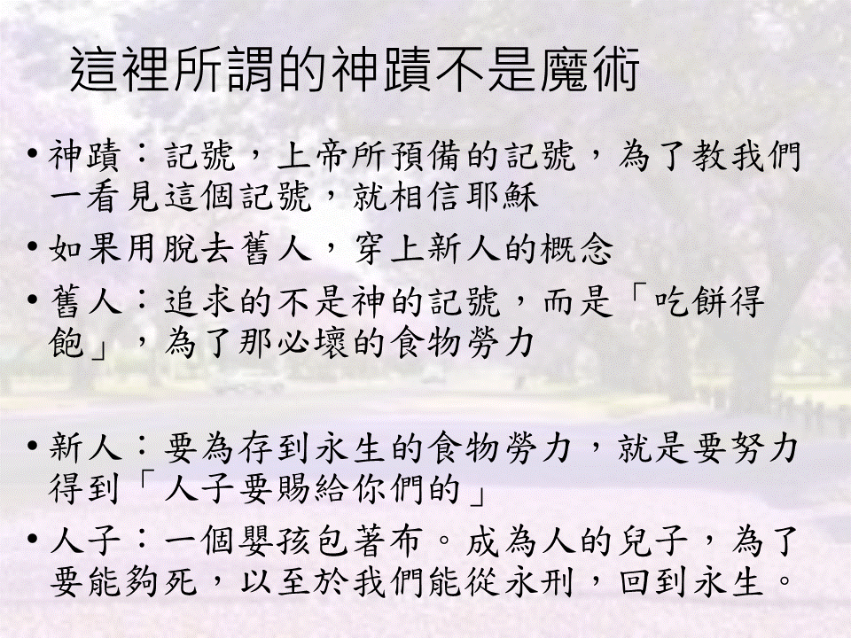
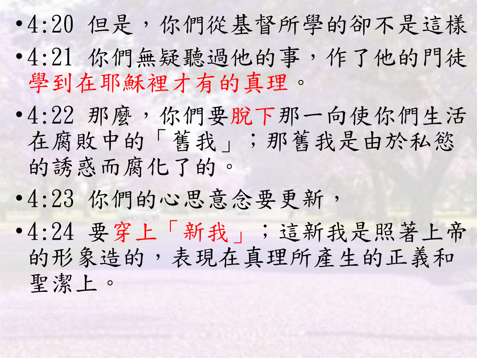
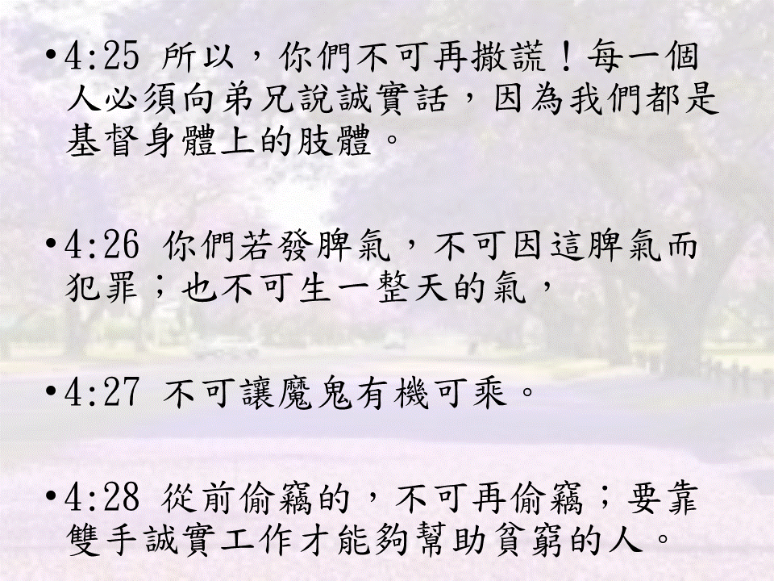
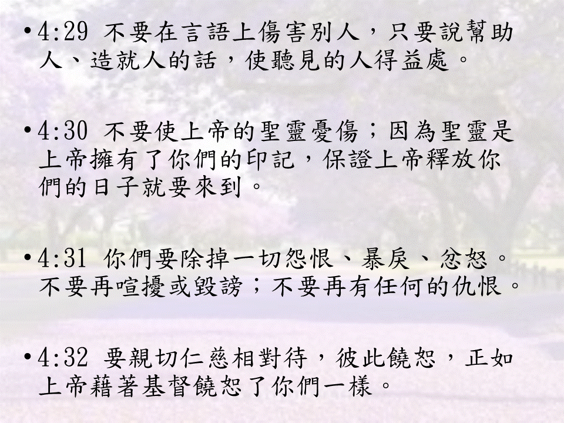
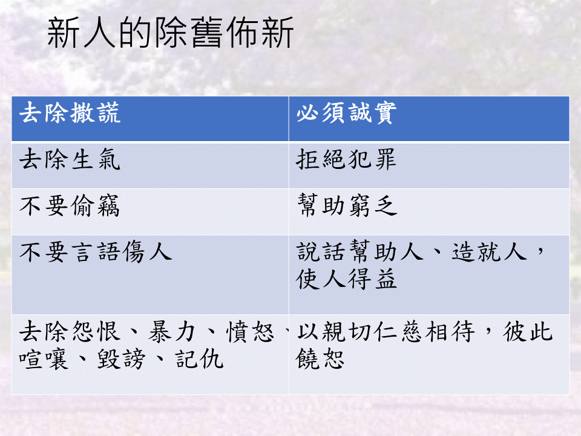
1. 今天為聖餐主日，全教會禱告會在本週六1/16，請弟兄姊妹預備心參加。
2. 教會六十周年徵文已開始了，徵求生命見證，請區長和小組長能力邀組員將神在他們生命中成就美好的事寫下來與大家分享，截止日一月底。請將見證寄到: church20200401@gmail.com 記得附上個人生活照。
3. 教會副堂約櫃屋主日愛筵後輪流打掃日期： 12月份恩典區，2021年1月份牛棚小組，願神賜下越服事越甘甜之恩。
4. 本堂弟兄姊妹使用奉獻袋的方式: a) 非固定方式~白色奉獻袋，可作隨時不定期奉獻使用; b) 固定方式~黃色奉獻袋可作每週或每月固定奉獻使用; 如有需要參加什一/月定或固定奉獻，歡迎先拿白色奉獻袋作第一次奉獻並註明需要提供固定奉獻袋，司帳同工會為您編號碼，作每次使用。
5. 一月份主日講員:麥愛堂執事(1/10)、李允中傳道(1/17)、許邦丞牧師(1/24)、李桃瑩教師(1/31) ，請大家為講員祝福禱告，也求神讓他們的講道成為我們的祝福。
6. 2020年12月1日起政府防疫更加積極，各位弟兄姊妹參加主日及各個聚會應該要戴口罩，加強消毒丶量體溫，包括講員及敬拜團隊。
為因應「國稅局綜合所得稅扣除額單據電子化作業」，以達節能減碳及便民服務。申報個人綜合所得稅時，捐款者原須提供國稅局各項扣除額之紙本收據，簽立本同意書後，即授權本會將您捐款明細，提供給稽徵機關作捐贈資料之歸戶作業。如要此同意書，請至後面招待處領取，再將資料填寫完畢交給辦公室
星期 |
時間 |
聚會名稱 |
|---|---|---|
主日 |
上午10點00分 |
主日崇拜、學青牧區、兒童主日學 |
主日 |
下午12點30分 |
長青小組、以勒小組、約書亞小組、保羅小組 佳美小組、盛愛小組、帝寶小組 |
週三 |
晚上08點00分 |
美女小組 |
週四 |
早上09點30分 |
良善小組 |
週四 |
晚上07點15分 |
喜樂小組 |
週四 |
晚上08點00分 |
凡恩小組 |
週五 |
晚上07點30分 |
牛棚小組、得勝小組、百合小組 |
週五 |
晚上08點00分 |
1+7小組 |